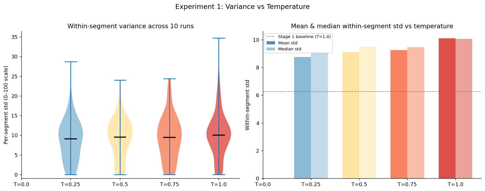
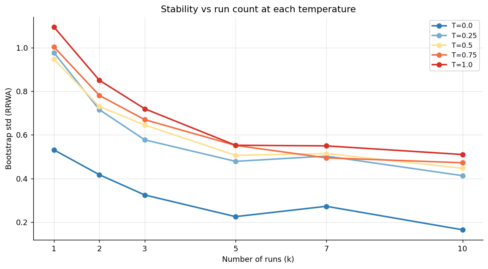
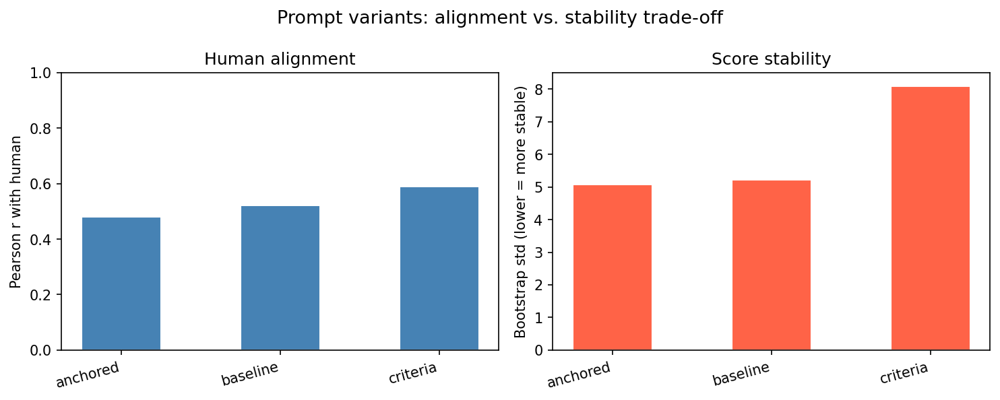
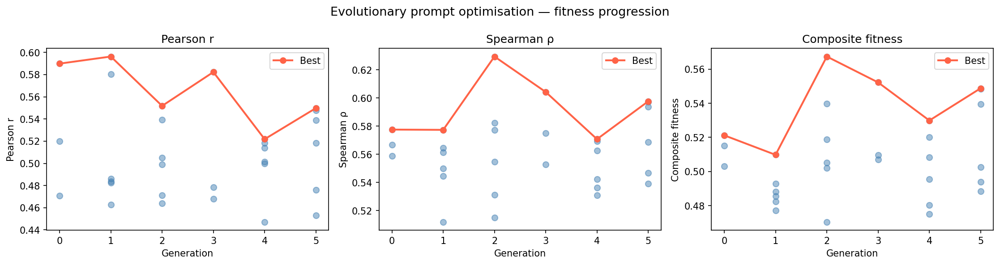
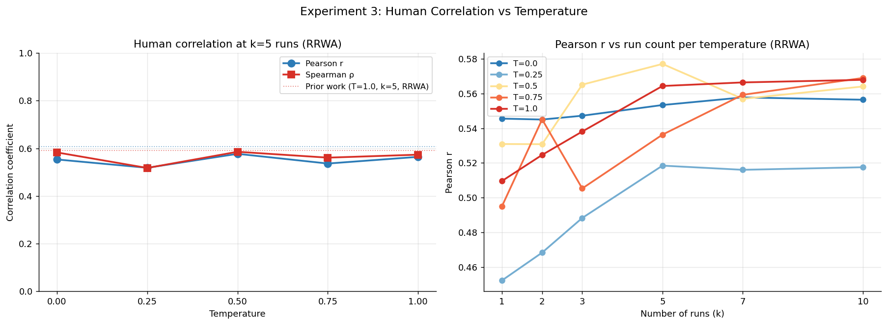
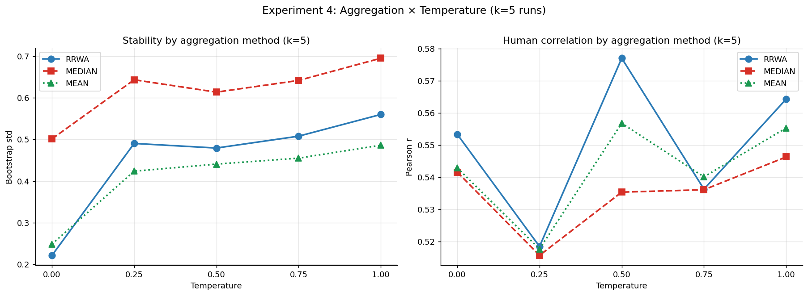
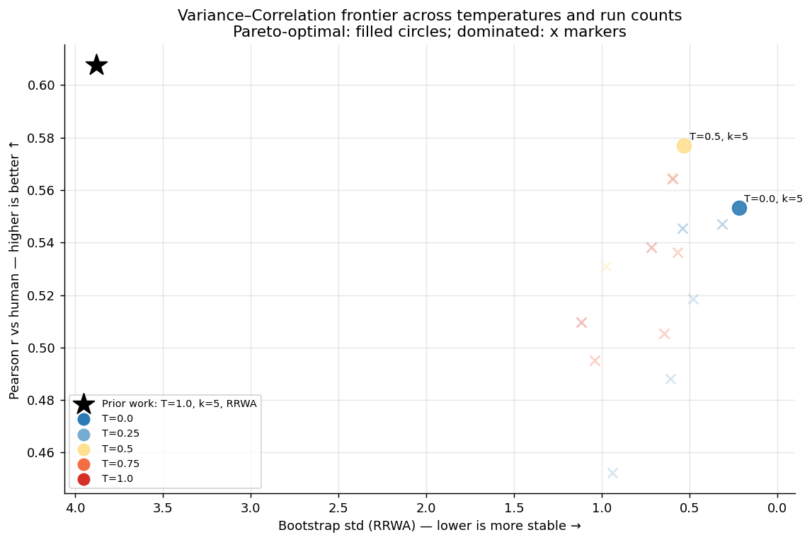
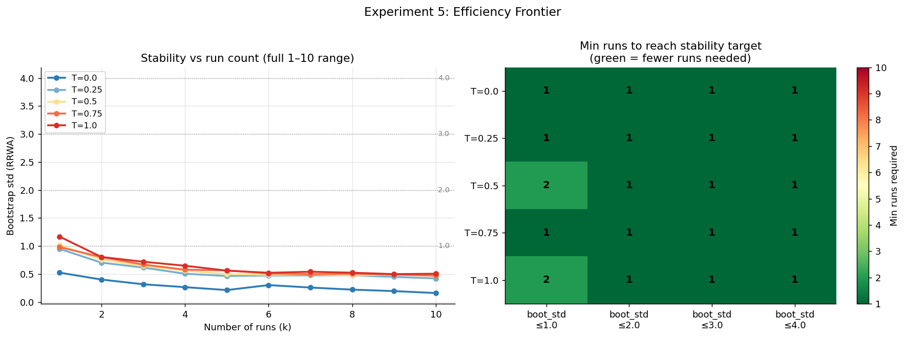
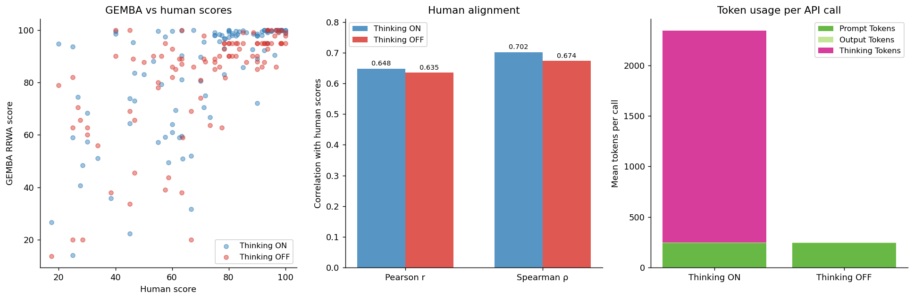
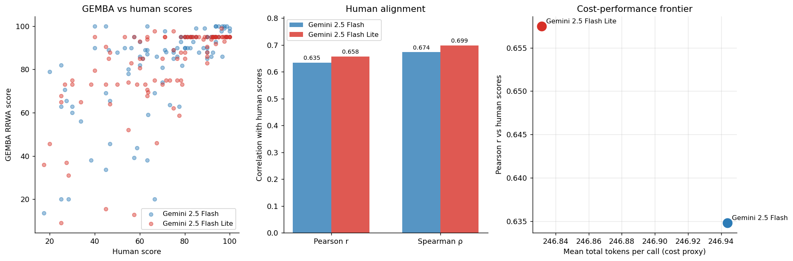

What we tested, what we found, and what we're using going forward.
Scoring a translation once gives an unreliable result. Running the scorer multiple times and averaging is necessary to get a stable score.

Each bar shows how much a single translation's score can vary across repeated runs. The spread is large no matter the setting — a single score cannot be trusted on its own.
More runs means more stable scores — and you need fewer runs at lower settings to get there.

Each line shows how score stability improves as more runs are added. Lower-temperature settings (cooler colors) level off sooner, meaning fewer runs are needed.
Yes — but there's a tradeoff. Prompts that agree more closely with human judgement tend to be less consistent, and vice versa.

Left: how closely each prompt version agrees with human scores (higher is better). Right: how consistent the scores are across repeated runs (lower is better). No single prompt wins on both.
Yes. An automated search found a better prompt than any of the hand-written ones, with gains levelling off after 3 rounds.

Each generation, the best-performing prompt from the previous round is used to generate new candidates. Performance peaks at generation 3 and stops improving after that.
Agreement with human scores is similar across settings, but a mid-range value (0.5) gives the best balance of accuracy and consistency.

Left: how closely scores agree with human judgements at each randomness setting (temperature). Right: how agreement changes as more runs are added — all settings stabilise by 5 runs.
How you combine multiple runs matters. Our weighted averaging method is more consistent than a simple average, at every setting tested.

Left: score consistency for each combining method across randomness settings (lower is better). Right: agreement with human scores. The weighted method (RRWA) is the most consistent and matches or beats the others on accuracy.
A setting of 0.5 gives the best combination of accuracy and consistency — fully deterministic scoring looks stable on paper but actually agrees less with humans.

Each point is a different combination of randomness setting and number of runs. Filled circles are the "best" options — no other combination beats them on both consistency and human agreement simultaneously.
A setting of 0.5 also reaches stable scores in the fewest runs — making it the most efficient choice overall.

Left: how quickly scores stabilise as more runs are added, for each setting. Right: the minimum number of runs needed to hit a given stability level — greener means fewer runs required.
No. Turning on extended thinking costs nearly 10× more but produces no meaningful improvement in score quality.

Left: how well scores agree with human judgements — nearly identical with thinking on or off. Right: how many tokens (and therefore cost) each mode uses — the "thinking" portion (pink) dominates when enabled.
The smaller, cheaper model performs just as well — and scores slightly higher on human agreement at one-third of the cost.

Left: score agreement with human judgements for each model — nearly identical, with Flash Lite slightly ahead. Right: cost vs. accuracy — Flash Lite sits at a better position on both axes.
| Dimension | Recommendation | Key Evidence |
|---|---|---|
| Model | Gemini 2.5 Flash Lite | Study 6: matches the larger model in quality at a third of the cost |
| Prompt | evo_3_0 | Study 3: automatically evolved prompt outperforms all hand-written versions |
| Temperature | T = 0.5 | Study 4: best balance of accuracy and consistency across all settings tested |
| Aggregation | RRWA | Studies 2–4: weighted averaging is more consistent than a simple average |
| Run count | 3 runs | Study 4: scores stabilise by 3 runs under the optimised configuration |
| Thinking mode | OFF | Study 5: no meaningful quality gain, but nearly 10× the cost |